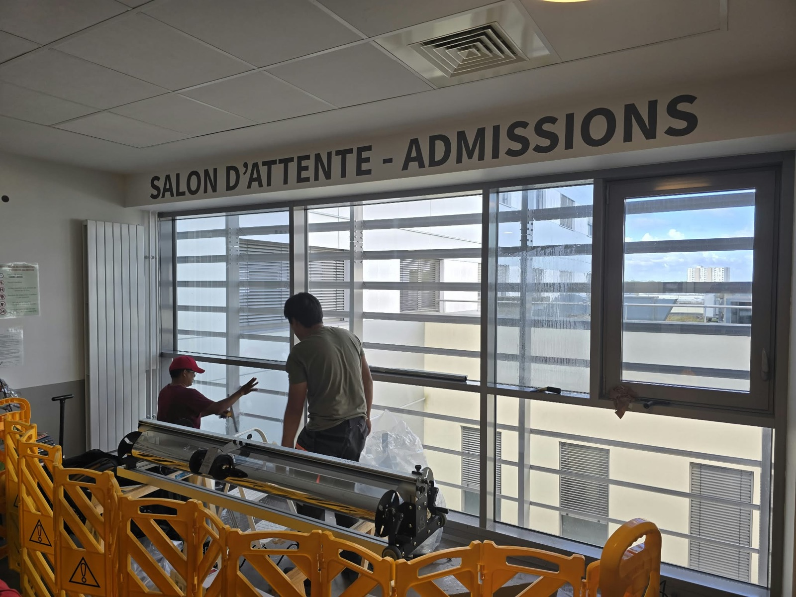
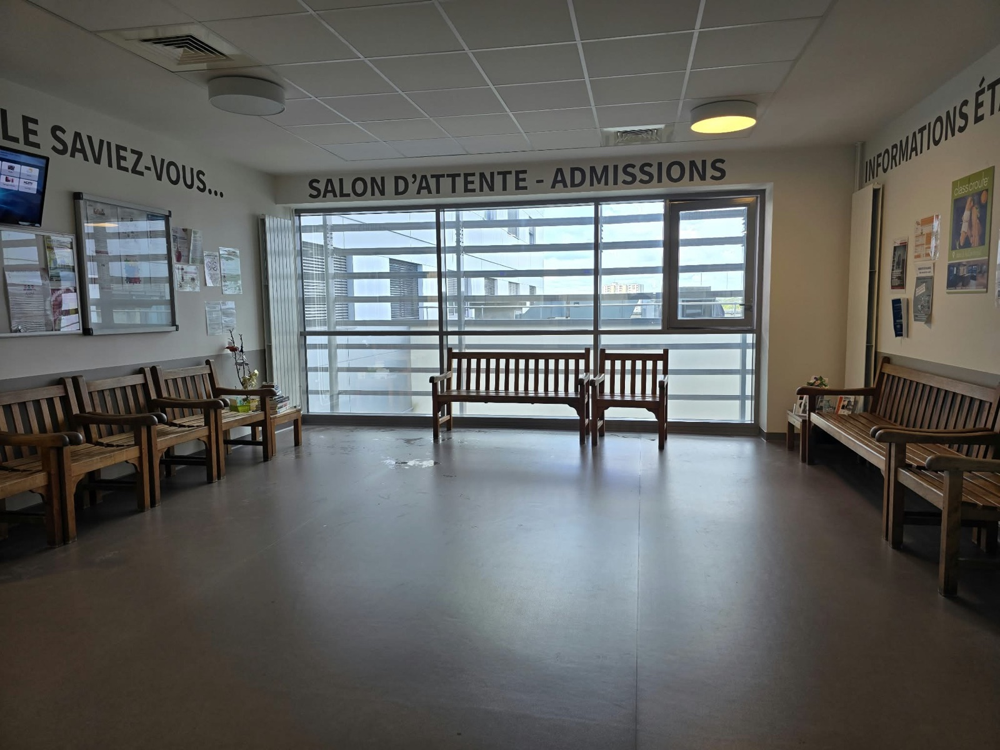
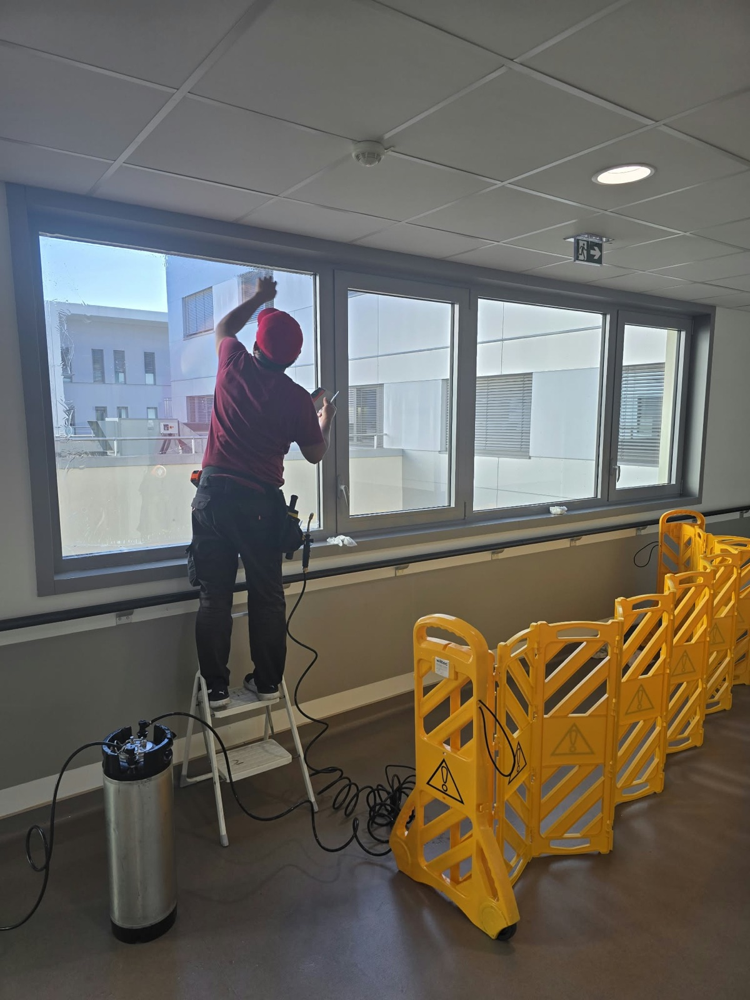
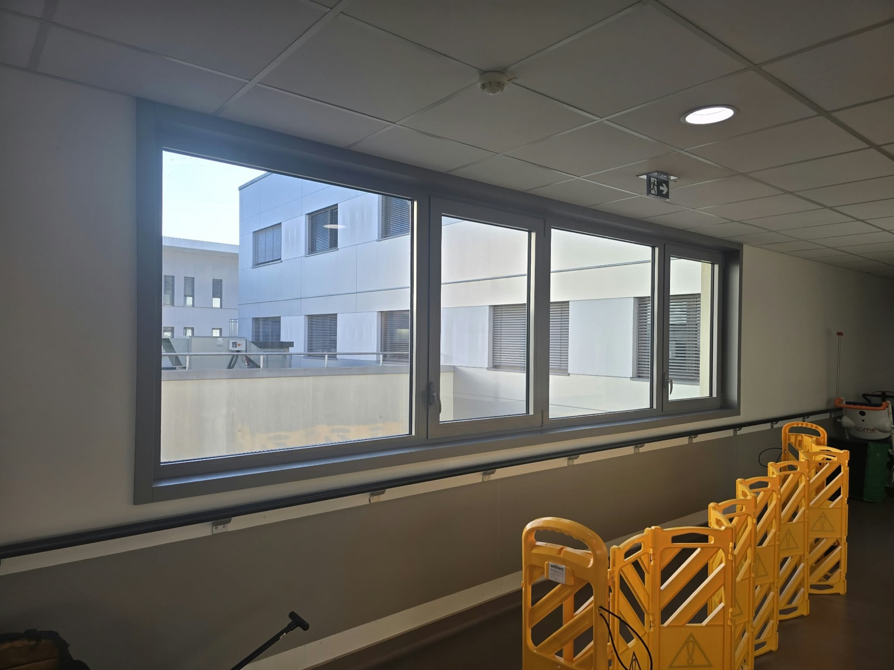
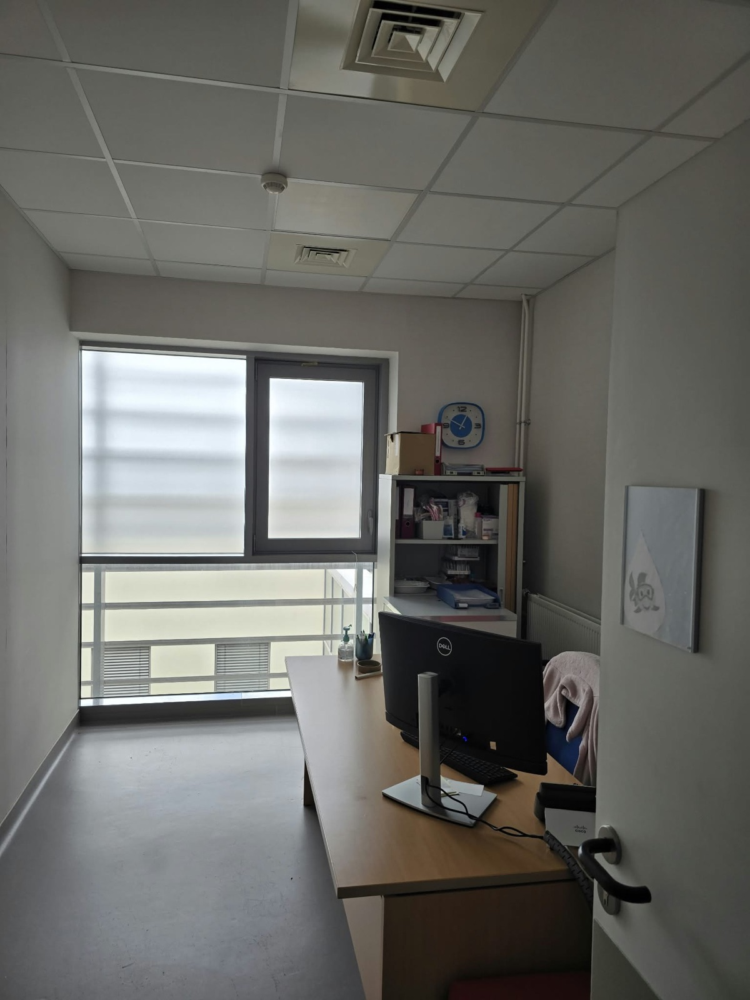
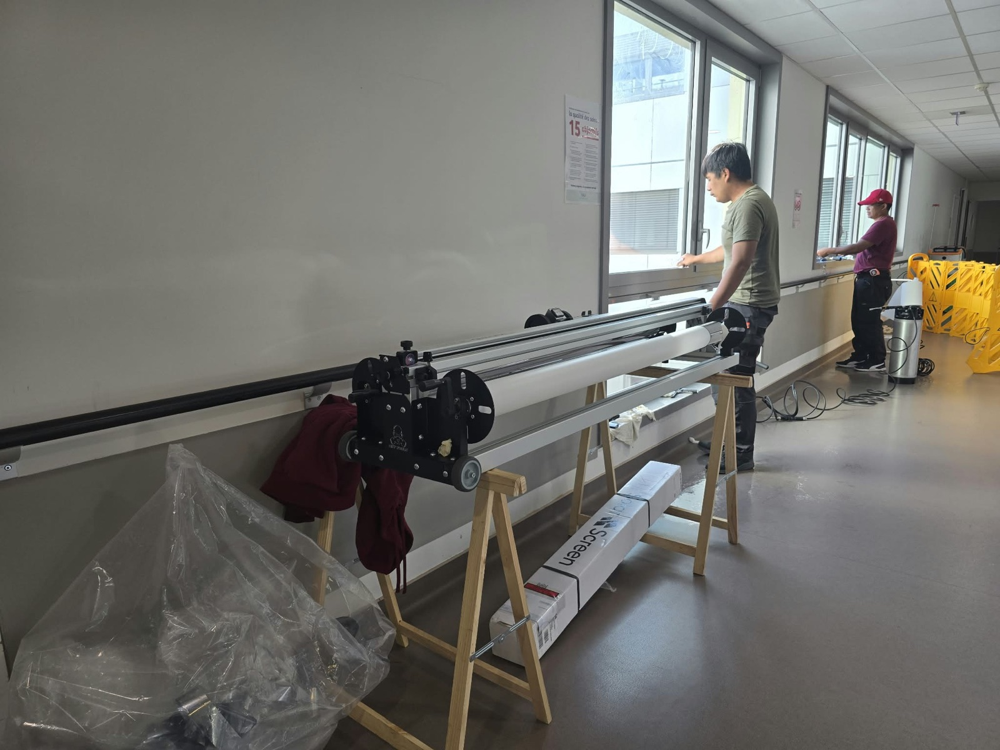

Clinique Saint-Jean l'Ermitage : la clinique nous rappelle pour ses bureaux et sa salle d'attente.
Trois mois après le traitement du hall d'accueil vitré, la Clinique Saint-Jean l'Ermitage de Melun (Seine-et-Marne) a confié à DFP France une seconde tranche : les fenêtres de la salle d'attente des admissions, des bureaux d'entretien et des circulations d'un étage. Pose d'un film solaire Solar Screen en face intérieure, en septembre 2026, sur un site en pleine activité.

Salle d'attente des admissions, pose en cours derrière le balisage
La salle d'attente rendue aux patients, le jour même
Fenêtres de circulation, pose à l'escabeau, couloir balisé
Le bandeau vitré du couloir une fois traité : la vue reste nette
Bureau d'entretien : le poste de travail fait face à la fenêtre
Le dérouleur installé dans le couloir, découpe à la longueur de chaque fenêtreLe contexte
En juin 2026, DFP France traitait le hall d'accueil toute hauteur de la Clinique Saint-Jean l'Ermitage à Melun. L'été a fait le reste : le confort gagné dans le hall a rendu plus visible l'inconfort des autres locaux exposés. La clinique nous a donc rappelés pour un étage de consultation : la salle d'attente des admissions, ouverte sur une grande baie, plusieurs bureaux d'entretien dont le poste de travail fait face à la fenêtre, et les bandeaux vitrés des couloirs.
Dans ces pièces, le problème n'est pas seulement la chaleur. Un écran placé devant une fenêtre plein ciel, c'est de l'éblouissement toute la journée pour le personnel, et une salle d'attente surchauffée, ce sont des patients qui patientent mal.
La solution technique
Pose d'un film solaire Solar Screen en face intérieure, découpé au dérouleur à la dimension de chaque vitrage. Le film rejette une part importante de l'énergie solaire et filtre les UV tout en gardant la vue vers l'extérieur : depuis le couloir comme depuis les bureaux, les bâtiments voisins restent parfaitement lisibles.
- Confort thermique dans les bureaux et la salle d'attente exposés
- Moins d'éblouissement sur les écrans des postes de consultation
- Filtration des UV, protection des personnes et du mobilier
- Vue conservée, pas d'effet « vitre occultée » dans des locaux de soin
L'intervention
Le chantier s'est déroulé pièce par pièce, sur un site en activité. Chaque zone de travail est isolée par des barrières de balisage, le temps de la pose ; la salle d'attente a été rendue aux patients le jour même, bancs remis en place. Dans les bureaux, l'équipe intervient à deux, à l'escabeau, sans déplacer les postes de travail. Les fenêtres de couloir, en bandeau, sont traitées depuis la circulation en laissant le passage libre.
Ce que ce chantier illustre
Un client qui rappelle est le meilleur retour qu'on puisse avoir. Ce second chantier montre aussi la façon dont un établissement de santé peut traiter ses vitrages par étapes : d'abord le hall, la surface la plus visible, puis les locaux de travail, sans jamais fermer un service. La même logique s'applique aux cabinets médicaux, laboratoires, EHPAD et bureaux dont les salariés travaillent face à la lumière.
Établissement de santé, ERP, hall vitré ?
On traite vos grandes façades. Sans fermer.
Cliniques, hôpitaux, EHPAD, écoles, bâtiments publics : nous intervenons sur site en activité, hors gêne pour vos usagers. Diagnostic gratuit par téléphone, devis sous 48 h en Île-de-France.